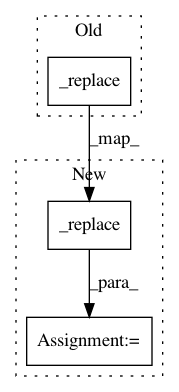

7b9de034f66722286b586d96e691fa72bc5c968e,nn_dataflow/LoopBlockingScheme.py,LoopBlockingScheme,verify_fetch,#LoopBlockingScheme#,498
Before Change
if not _replace(regf_data, regf_access, dce, idx_pr,
(1, 1), bl_cnt_list[self.BL.REGF][dce]):
// GBUF.
_replace(gbuf_data, gbuf_access, dce, idx_pr,
bl_cnt_list[self.BL.REGF][dce],
bl_cnt_list[self.BL.GBUF][dce],
not self.stored_in_gbuf[dce])
if not all(a % u == 0 for a, u in zip(gbuf_access, self.total_units)):
raise RuntimeError("LoopBlockingScheme: fetch verification failed. "
"GBUF access is not multiple of total units. "
After Change
cnt = (1, 1)
// REGF.
cnt = _replace(regf_data, regf_access, dce, idx_pr,
cnt, bl_cnt_list[self.BL.REGF][dce])
if not any(cnt):
continue
// GBUF.
In pattern: SUPERPATTERN
Frequency: 3
Non-data size: 3
Instances
Project Name: stanford-mast/nn_dataflow
Commit Name: 7b9de034f66722286b586d96e691fa72bc5c968e
Time: 2017-05-30
Author: mgao12@stanford.edu
File Name: nn_dataflow/LoopBlockingScheme.py
Class Name: LoopBlockingScheme
Method Name: verify_fetch
Project Name: rail-berkeley/softlearning
Commit Name: 48393e5e645ff2f39d7dadb17956b6a75edee900
Time: 2019-11-28
Author: kristian.hartikainen@gmail.com
File Name: softlearning/environments/adapters/dm_control_adapter.py
Class Name: DmControlAdapter
Method Name: step
Project Name: tensorflow/agents
Commit Name: 3a4b2c31cfc146e4f487a9e2a05b53783f494318
Time: 2020-02-03
Author: kbanoop@google.com
File Name: tf_agents/policies/tf_py_policy.py
Class Name: TFPyPolicy
Method Name: _action